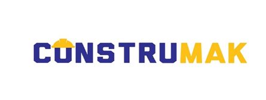

Pintura
Preparação de superfícies, raspagem, massa, lixamento, selador e pintura.

Soluções para empresas, órgãos públicos, condomínios e clientes privados, com foco em qualidade, organização e execução responsável.
GUILHERME DE LIMA CHITOLINA LTDA
CNPJ: 28.834.010/0001-41
Atendimento: Uruguaiana/RS e região
A Construmak atua na execução de serviços de manutenção predial e construção civil, atendendo demandas de conservação, recuperação, reforma e melhoria de edificações.
Preparação de superfícies, raspagem, massa, lixamento, selador e pintura.
Reparos, execução de paredes, rebocos, revestimentos e adequações.
Manutenção e serviços elétricos de baixa tensão em edificações.
Instalações, reparos e manutenção de redes hidráulicas prediais.
Serviços em madeira, reparos, estruturas e manutenção predial.
Atendimento integrado para conservação e recuperação de imóveis.
Razão social:
GUILHERME DE LIMA CHITOLINA LTDA
Nome fantasia:
CONSTRUMAK
CNPJ:
28.834.010/0001-41
Endereço:
Rua Gal. Flores da Cunha, nº 3700
Uruguaiana/RS – CEP 97502-680
E-mail:
construmakltda@outlook.com
WhatsApp:
(55) 99933-7766